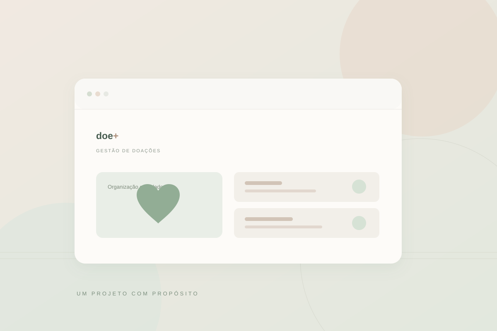

PROJETO PESSOAL / BACKEND
Doe+
Um sistema demonstrativo para registrar doações de dinheiro e itens, acompanhar pendências e apoiar a organização de uma comunidade.

01 / SOBRE O PROJETO
Software com
propósito.
O Doe+ surgiu da ideia de utilizar desenvolvimento de software para auxiliar na administração de doações. O contexto do projeto é a organização de registros e informações importantes para a rotina de uma comunidade religiosa.
A aplicação usa Java 21, Spring Boot, Spring Data JPA e H2, com uma API REST. A interface é construída em HTML, CSS e JavaScript e possui alternância entre tema claro e escuro.
Esta versão demonstrativa permite cadastrar, editar, listar, filtrar, marcar como recebidas e excluir doações. Ela não processa pagamentos e não possui autenticação; é destinada a estudos e uso local.